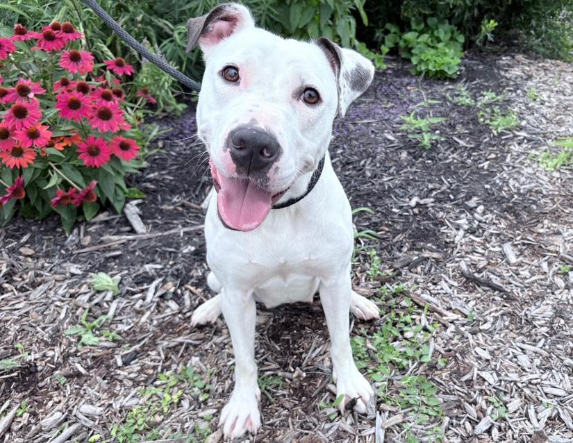
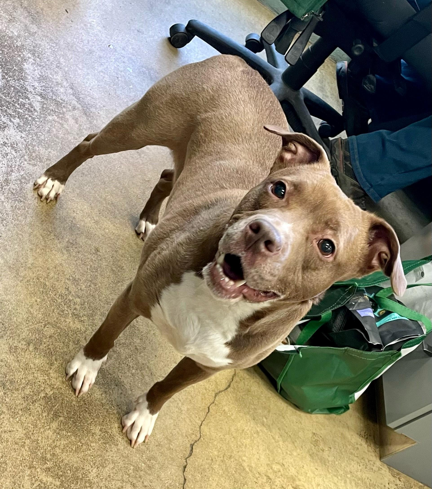

There are a total of 4 base colors in dogs. To tell what the base color of the dog is, simply look at the darkest colored fur or their nose!
These base colors comes from a combination of 2 genes, TYRP1 and MLPH.
TYRP1 controls the type of eumelanin that is created, and has a variation of either black or brown pigment.
MLPH controls how much dilution the dog's eumelanin gets. It has a variation of either dilute or non-dilute
This is the most common color, a combination of black pigment with non-dilute.
Here are some examples:
(click on the images of dogs to go to their adoption page!)


This is a combination of black pigment and dilution, creating a light to dark gray color.
A combination of brown pigment and no dilution creates the color liver!


The rarest combination, with brown pigment and dilution.
Reference pictures courtesy of doggenetics.co.uk
Images of animals courtesy of Columbus Animal Care Servies and Kat Dunn Photography